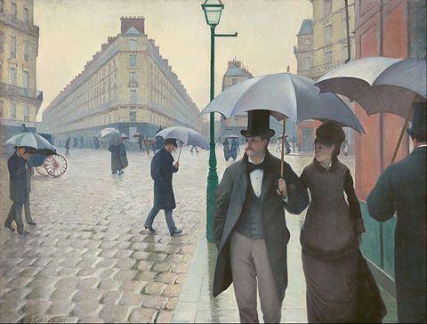
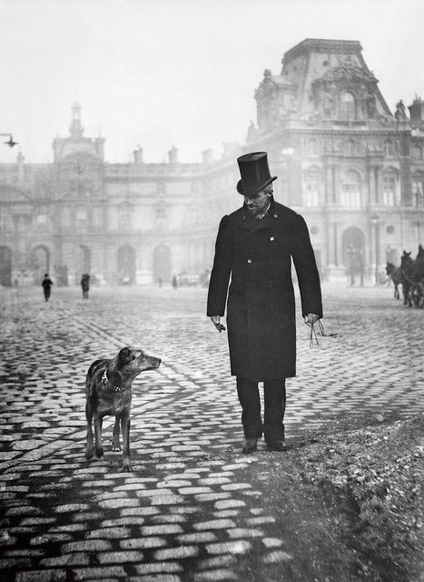
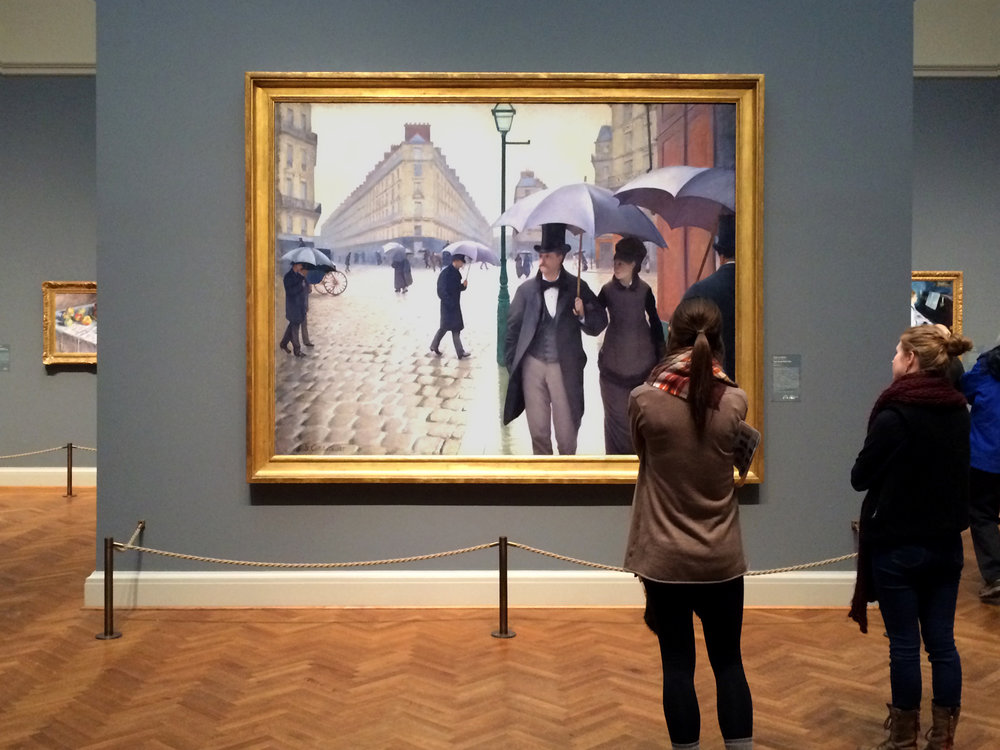
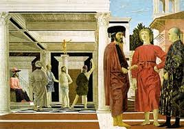
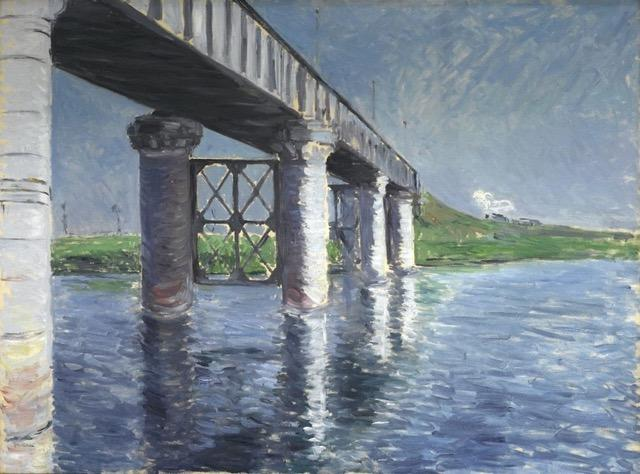

Paris Street, Rainy Day.
By Lucia Adams
One of the most esteemed paintings in The Art Institute’s Impressionist collection is Gustave Caillebotte’s masterpiece Paris Street, Rainy Day, (Rue de Paris, temps de pluie), which Zola called “as neat as glass”. Exhibited at the Third Impressionist Exhibition of 1877, it bears little resemblance to the movement’s pastel joie de vivre, exploration of light or sketchy execution, far more traditionally realistic.
Caillebotte was omitted from early histories of Impressionism though he exhibited in five of their eight exhibitions and it was rather as patron and collector that the lawyer, soldier and heir to a manufacturing fortune was acknowledged. He financed their exhibitions, buying 64 paintings from Monet, (also paying his rent) Renoir, Sisley, Pissaro, now the core of the Musee D’Orsay collection, and convincing the Louvre to purchase Manet’s Olympia.

Gustave Caillebotte.
Paris Street, Rainy Day remained in the Caillebotte family until 1955 when they sold it to collector Walter P. Chrysler Jr. relinquishing it only because they lacked wall space to display the massive seven by nine feet canvas. In 1964 through the dealer Wildenstein Chrysler sold it to The Art Institute, funded by the Charles H. and Mary F.S. Worcester bequest. The earliest acquisition of Impressionist paintings in Chicago, still unpopular risky investments at the time, commenced when board president Martin Ryerson bought his first Monet in 1891. In the same year Bertha and Potter Palmer acquired 20 of their 90 Monets — including the Stacks of Wheat series they bequeathed to the Art Institute.

In the Art Institute.
When the museum re-opens you can view The Real Cailebotte, which in its gigantic scale invites you travel into belle epoque Paris. You can experience its aura and powerful effect in person unlike in a “mechanical reproduction” (in the words of Walter Benjamin) of a book, poster or computer screen. The physical artwork before your eyes gives you a new appreciation of Western representational painting and may also wean you, as it did me, from the black slashes of Franz Klein, the colored slabs of Rothko!
Caillebotte worked for months plotting the mathematics of the canvas which he painted with near-invisible brushstrokes to reveal Parisians under English umbrellas walking at twilight in the Place de Dublin. The rue de Turin runs into the foreground from the rue de Moscou on the left, the rue Clapeyron on the right. Between them on the ground floor of the building is a pharmacy that remains there in 2020. Remarquable!

Place de Dublin today.
Our eyes first focus on the couple in the right foreground dressed in the height of Parisian fashion, she with hat, veil, diamond earrings, fur lined coat, he with topcoat, bowtie, frock coat, and waistcoat. They are definitively haut bourgeois as is the man brushing by to their right radically cropped as in a snapshot with half of his body outside the frame.
Working class figures populate the background, a maid in a doorway, a painter carrying a ladder, a man jumping from the wheel of a carriage, a pair of legs appear below the rim of an umbrella, getting smaller as they recede into the distance. This convention, one of several, creates the illusion of third dimensional space on a flat two dimensional surface.
The mise en scene takes place in the brand new Paris of Baron Haussmann, the prefect of the Seine, who just completed 20 years of building in 1870. In 1853, Napoleon III had instructed him to change Paris from the medieval maze of overcrowded, narrow streets and potential barricades into spacious boulevards, public squares, ample parks and neoclassical buildings of ashlar, cut stone masonry. Its blocks of apartment buildings with Second Empire façades, contain commerce on the ground floor, balconies on the second, and maid’s rooms on top, all fronting on wide street axes.

Piero Della Francesca’s The Flagellation.
Caillebotte uses two-point perspective for the composition where parallel lines along the width and depth of an object meet at two separate points on the horizon, space stretched to lengthen it further. The surface is divided into three sections, (exactly as in Piero Della Francesca’s The Flagellation.), the vertical line of the green gaslight —throwing shadows on the wet cobblestones— dividing the painting into two equal halves. A horizontal alignment divides the painting into quarters according to the ratio of The Golden Section.
In the 180 degree panorama, the influence of the camera is seen as the figures seem to have just walked into the canvas. The foreground is very slightly out of focus or smudged (it seems to bulge like a lens) the mid-distance with sharper edges, and the background progressively indistinct and blurry the farther back the eye travels. Aerial perspective joins linear perspective in a masterful homage to a thousand year tradition of Western painting.

Seine and Railway Bridge 1887.
Throughout his career Caillebotte chronicled a cross section of the lives of contemporary Parisians, working class, middle class, upper class. Burly men polish floors and paint buildings, a young couple on a new iron bridge looks down at Gare St. Lazare, gentlemen gaze from high balconies; there are interior scenes of bourgeois apartments, portraits of prosperous friends, nudes and still lifes executed in a realistic style reminiscent of Courbet and Corot. Overall it seems the artist never found a consistent style since he died young and never repeated the impact and ingenuity of the Art Institute’s painting.
Later in life when he left Paris for the countryside, philatelism, gardening and yachting, his painting, landscapes, river scenes, were essays in plein airism but his forte was always elegantly executed realism celebrating Paris in the 1870s and 1880s. His place in the history of modern art was in limbo until the mid-1970s and not until 1994 that the first international exhibition Urban Impressionist took place, focused on his entire oeuvre in commemoration of the 100th anniversary of his death at 46. Pissarro wrote to his son Lucien, “he is one we can really mourn, he was good and generous, and a painter of talent to boot.”
The exhibition opened at the National Gallery in Paris before traveling to Chicago and Los Angeles and included 117 works—89 paintings, 28 works on paper— still lifes, portraits, interiors, views of Paris streets and boulevards from diverse perspectives. In 2015-16 The National Gallery in Washington, and the Kimbell in Fort Worth organized the latest retrospective of his paintings the undisputed star of the show as always— Paris Street, Rainy Day.